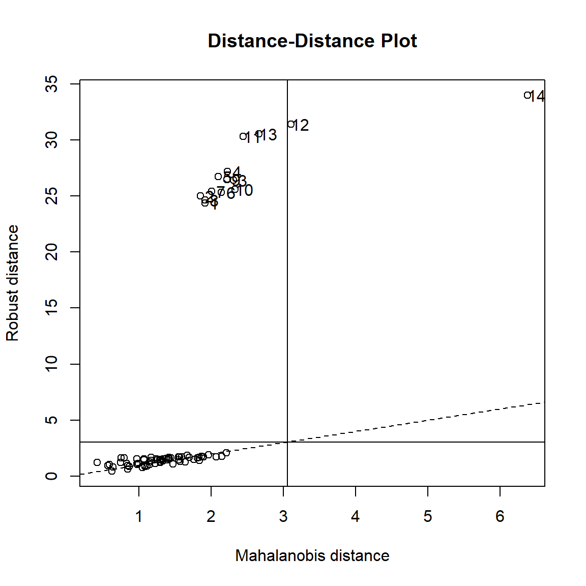
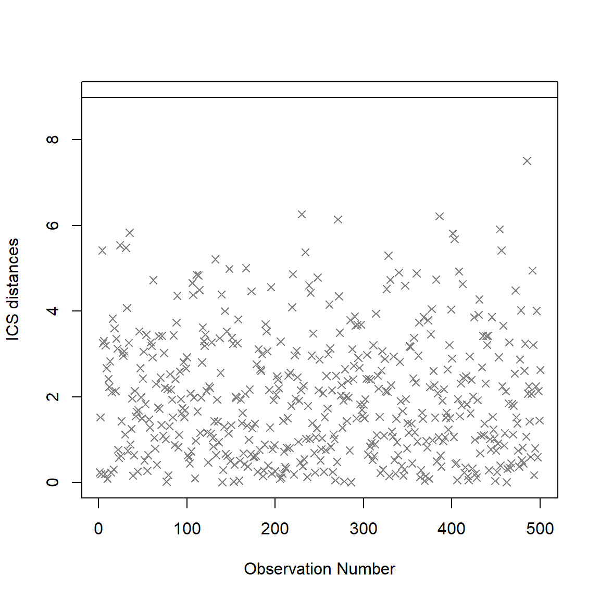

Figure 0.1: Outliers
Figure 0.1: Outliers
In my last blog, I’ve discussed the outliers detection in regression (part 3). In fact, outliers in regression is a special case of the multivariate outliers. Because regression has been widely used, I choose to make it as a special topic.
Now, in this part I am going to discuss how the multivariate outliers are detected in a general way.
In this post, a linear regression example is still used, but the outlier detection methods we apply are in a multivariate way.
Multivariate Statistics - Simultaneous observation and analysis of more than one outcome variable.
The Animals data from the MASS package in R is selected for demonstration.
# Load library and pull out data
library(MASS)
data(Animals)
attach(Animals)
# check data structure.
head(Animals)## body brain
## Mountain beaver 1.35 8.1
## Cow 465.00 423.0
## Grey wolf 36.33 119.5
## Goat 27.66 115.0
## Guinea pig 1.04 5.5
## Dipliodocus 11700.00 50.0The variables for the demonstration are body weight and brain weight of Animals which are converted to its log form (to make highly skewed distributions less skewed)
# Log transformation.
Y <- data.frame(body = log(Animals$body),
brain = log(Animals$brain))
# Create Scatterplot
plot_fig <- ggplot(Y, aes(x = body, y = brain)) +
geom_point(size = 5) +
xlab("log(body)") +
ylab("log(brain)") +
ylim(-5, 15) +
scale_x_continuous(limits = c(-10, 16), breaks = seq(-15, 15, 5))
plot_fig
In the multivariate world, outliers can be defined as particularly influential observations.
An outlier is an observation which deviates so much from the other observations as to arouse suspicions that it was generated by a different mechanism.” – D. M. Hawkins
Most multivariate outlier detection methods rely on the computation of some distance metric, and the observations greater than a certain threshold are considered outliers.
Importantly, outliers detection methods are meant to provide information to the researcher, rather than being an automatized procedure which mindless application is a substitute for thinking.
Again, outlier detection and handling is still a subjective process from researcher. It varies based on different research goals, perspectives, and theoretical frameworks.
Using the composite approach, multivariate outliers are obtained via the joint application of multiple outliers detection algorithms listed below:
Prior to the general multivariate outlier detection method introduction, it is worth mentioning a couple of model-specific methods.
Among outlier detection methods, Cook’s distance and leverage are less common than the basic Mahalanobis distance, but still used. Cook’s distance estimates the variations in regression coefficients after removing each observation, one by one (Cook, 1977). Since Cook’s distance is in the metric of an F distribution with p and n-p degrees of freedom, the median point of the quantile distribution can be used as a cut-off (Bollen, 1985). A common approximation or heuristic is to use 4 divided by the numbers of observations, which usually corresponds to a lower threshold (i.e., more outliers are detected). This only works for Frequentist models. For more Cook’s Distance information, please refer my previous blog (part 3).
Pareto is a coefficient used for for Bayesian models. The reliability and approximate convergence of Bayesian models can be assessed using the estimates for the shape parameter \(k\) of the generalized Pareto distribution. If the estimated tail shape parameter k exceeds 0.5, the user should be warned, although in practice the authors of the loo package observed good performance for values of \(k\) up to 0.7 (the default threshold used by performance).
Mahalanobis distance (Mahalanobis, 1930) is often used for multivariate outliers detection as this distance takes into account the shape of the observations.
Mahalanobis (or generalized) distance for observation is the distance from this observation to the center, taking into account the covariance matrix.

Figure 3.1: Outliers
Classical Mahalanobis distances: sample mean as estimate for location and sample covariance matrix as estimate for scatter.
To detect multivariate outliers the Mahalanobis distance is compared with a cut-off value, which is derived from the chi-square distribution
In two dimensions we can construct corresponding 97.5% tolerance ellipsoid, which is defined by those observations whose Mahalanobis distance does not exceed the cut-off value.
The default threshold is often arbitrarily set to some deviation (in terms of SD or MAD) from the mean (or median) of the Mahalanobis distance. However, as the Mahalanobis distance can be approximated by a Chi-squared distribution (Rousseeuw & Van Zomeren, 1990), we can use the alpha quantile of the chi-square distribution with k degrees of freedom (\(k\) being the number of columns).
By default, the alpha threshold is set to 0.025 (corresponding to the 2.5% most extreme observations; Cabana, 2019). This criterion is a natural extension of the median plus or minus a coefficient times the MAD method (Leys et al., 2013).
Y_center <- colMeans(Y)
Y_cov <- cov(Y)
Y_radius <- sqrt(qchisq(0.975, df = ncol(Y)))
library(car)
Y_ellipse <- data.frame(ellipse(center = Y_center,
shape = Y_cov,radius = Y_radius,
segments = 100, draw = FALSE))
colnames(Y_ellipse) <- colnames(Y)
plot_fig <- plot_fig +
geom_polygon(data=Y_ellipse, color = "dodgerblue",
fill = "dodgerblue", alpha = 0.2) +
geom_point(aes(x = Y_center[1], y = Y_center[2]),
color = "blue", size = 6)
plot_fig
As you can observed from the plot graph above, Mahalanobis Distance method gives us 3 potential outlier observations, which are close to the ellipse line.
The maha_dist function from {assertr} computes mahalanobis distance for each row of data frame. This function will return a vector, with the same length as the number of rows of the provided data frame, corresponding to the average mahalanobis distances of each row from the whole data set.
library(assertr)
maha_dist(mtcars)## [1] 8.946673 8.287933 8.937150 6.096726 5.429061 8.877558
## [7] 9.136276 10.030345 22.593116 12.393107 11.058878 9.476126
## [13] 5.594527 6.026462 11.201310 8.672093 12.257618 9.078630
## [19] 14.954377 10.296463 13.432391 6.227235 5.786691 11.681526
## [25] 6.718085 3.645789 18.356164 14.000669 21.573003 11.152850
## [31] 19.192384 9.888781maha_dist(iris, robust=TRUE)## [1] 7.181303 14.209332 9.233412 14.029571 6.547538 9.032628
## [7] 9.557745 9.434082 16.327924 14.609934 7.944119 12.241370
## [13] 14.152604 10.634152 8.940285 9.311006 7.996840 7.676170
## [19] 10.686693 6.772707 14.171183 8.199367 4.819010 17.927827
## [25] 21.970559 17.509804 12.134829 8.718618 8.664029 14.539774
## [31] 15.467206 13.918214 12.751421 7.800228 13.513486 9.613279
## [37] 9.535921 8.718478 13.079168 9.504772 7.041884 36.721567
## [43] 10.581647 18.598838 14.208248 15.428511 9.871731 10.898606
## [49] 7.630712 9.183846 12.142542 5.700266 15.153194 9.430086
## [55] 12.108781 11.172977 9.444704 5.395403 11.484362 7.646899
## [61] 10.479824 5.254603 14.996254 11.744912 2.849079 6.677997
## [67] 10.917922 9.978773 24.822657 4.694515 20.355909 3.146007
## [73] 22.559940 18.395726 5.389387 6.864585 17.525227 19.539023
## [79] 8.151810 3.098777 4.944060 5.362978 2.057880 26.155842
## [85] 14.053245 8.768882 10.215374 17.593198 3.270086 5.936323
## [91] 13.524049 8.625081 3.824912 5.800611 5.591581 5.707430
## [97] 3.987159 4.389560 9.471902 3.068005 30.970783 32.288310
## [103] 16.382188 27.303966 18.252965 14.211336 57.834820 27.316610
## [109] 17.104499 29.976800 42.865459 24.851409 25.740563 34.263970
## [115] 56.920919 43.839091 29.769508 30.314755 8.766718 35.514678
## [121] 27.338244 44.696221 18.955613 38.729456 26.599257 32.185485
## [127] 44.286331 45.304056 18.655092 42.634687 19.136274 40.640072
## [133] 20.651593 46.870404 53.923075 20.573812 41.472972 33.431351
## [139] 49.320574 31.907998 34.144669 57.844485 32.288310 20.731382
## [145] 39.082779 47.916444 32.925457 34.182320 45.599451 41.065734mtcars %>%
insist_rows(maha_dist, within_n_mads(10), everything())## mpg cyl disp hp drat wt qsec vs am gear
## Mazda RX4 21.0 6 160.0 110 3.90 2.620 16.46 0 1 4
## Mazda RX4 Wag 21.0 6 160.0 110 3.90 2.875 17.02 0 1 4
## Datsun 710 22.8 4 108.0 93 3.85 2.320 18.61 1 1 4
## Hornet 4 Drive 21.4 6 258.0 110 3.08 3.215 19.44 1 0 3
## Hornet Sportabout 18.7 8 360.0 175 3.15 3.440 17.02 0 0 3
## Valiant 18.1 6 225.0 105 2.76 3.460 20.22 1 0 3
## Duster 360 14.3 8 360.0 245 3.21 3.570 15.84 0 0 3
## Merc 240D 24.4 4 146.7 62 3.69 3.190 20.00 1 0 4
## Merc 230 22.8 4 140.8 95 3.92 3.150 22.90 1 0 4
## Merc 280 19.2 6 167.6 123 3.92 3.440 18.30 1 0 4
## Merc 280C 17.8 6 167.6 123 3.92 3.440 18.90 1 0 4
## Merc 450SE 16.4 8 275.8 180 3.07 4.070 17.40 0 0 3
## Merc 450SL 17.3 8 275.8 180 3.07 3.730 17.60 0 0 3
## Merc 450SLC 15.2 8 275.8 180 3.07 3.780 18.00 0 0 3
## Cadillac Fleetwood 10.4 8 472.0 205 2.93 5.250 17.98 0 0 3
## Lincoln Continental 10.4 8 460.0 215 3.00 5.424 17.82 0 0 3
## Chrysler Imperial 14.7 8 440.0 230 3.23 5.345 17.42 0 0 3
## Fiat 128 32.4 4 78.7 66 4.08 2.200 19.47 1 1 4
## Honda Civic 30.4 4 75.7 52 4.93 1.615 18.52 1 1 4
## Toyota Corolla 33.9 4 71.1 65 4.22 1.835 19.90 1 1 4
## Toyota Corona 21.5 4 120.1 97 3.70 2.465 20.01 1 0 3
## Dodge Challenger 15.5 8 318.0 150 2.76 3.520 16.87 0 0 3
## AMC Javelin 15.2 8 304.0 150 3.15 3.435 17.30 0 0 3
## Camaro Z28 13.3 8 350.0 245 3.73 3.840 15.41 0 0 3
## Pontiac Firebird 19.2 8 400.0 175 3.08 3.845 17.05 0 0 3
## Fiat X1-9 27.3 4 79.0 66 4.08 1.935 18.90 1 1 4
## Porsche 914-2 26.0 4 120.3 91 4.43 2.140 16.70 0 1 5
## Lotus Europa 30.4 4 95.1 113 3.77 1.513 16.90 1 1 5
## Ford Pantera L 15.8 8 351.0 264 4.22 3.170 14.50 0 1 5
## Ferrari Dino 19.7 6 145.0 175 3.62 2.770 15.50 0 1 5
## Maserati Bora 15.0 8 301.0 335 3.54 3.570 14.60 0 1 5
## Volvo 142E 21.4 4 121.0 109 4.11 2.780 18.60 1 1 4
## carb
## Mazda RX4 4
## Mazda RX4 Wag 4
## Datsun 710 1
## Hornet 4 Drive 1
## Hornet Sportabout 2
## Valiant 1
## Duster 360 4
## Merc 240D 2
## Merc 230 2
## Merc 280 4
## Merc 280C 4
## Merc 450SE 3
## Merc 450SL 3
## Merc 450SLC 3
## Cadillac Fleetwood 4
## Lincoln Continental 4
## Chrysler Imperial 4
## Fiat 128 1
## Honda Civic 2
## Toyota Corolla 1
## Toyota Corona 1
## Dodge Challenger 2
## AMC Javelin 2
## Camaro Z28 4
## Pontiac Firebird 2
## Fiat X1-9 1
## Porsche 914-2 2
## Lotus Europa 2
## Ford Pantera L 4
## Ferrari Dino 6
## Maserati Bora 8
## Volvo 142E 2 ## anything here will runA robust version of Mahalanobis distance using an Orthogonalized Gnanadesikan-Kettenring pairwise estimator (Gnanadesikan & Kettenring, 1972).
check_outliers function in {performance} package has ‘Robust Mahalanobis Distance’ option. The bigutilsr package is required to apply this option.
Meanwhile, the maha_sparse function in {DiPs} package creates a robust Mahalanobis distance for matching based on a sparse network.
# load library
library(DiPs)
# pull data source
data("nh0506Homocysteine")
attach(nh0506Homocysteine)
X <- cbind(female,age,black,education,povertyr,bmi)
p <- glm(z~female+age+black+education+povertyr+bmi,family=binomial)$fitted.values
d <- cbind(nh0506Homocysteine,p)
detach(nh0506Homocysteine)
# Apply symmetric caliper 0.15 on propensity score
dist1<-maha_sparse(d$z,X,p,0.15)
length(dist1$d)## [1] 863183# apply asymmetric caliper c(-0.2,0.1) on propensity score
dist2 <- maha_sparse(d$z,X,p,c(-0.2,0.1))
length(dist2$d)## [1] 751835You can also plot the Robust Mahalanobis distance through plot.mcd function from {rrcov} package. plot.mcd function shows the Mahalanobis distance based on robust and classical estimates of the location and the covariance matrix in different plots.
# load library.
library(rrcov)
data(hbk)
hbk.x <- data.matrix(hbk[, 1:3])
datamcd <- CovMcd(hbk.x)
rrcov::plot(datamcd)
Another robust version of Mahalanobis. Leys et al. (2018) argue that Mahalanobis Distance is not a robust way to determine outliers, as it uses the means and covariances of all the data – including the outliers – to determine individual difference scores.
Minimum Covariance Determinant calculates the mean and covariance matrix based on the most central subset of the data (by default, 66%), before computing the Mahalanobis Distance. This is deemed to be a more robust method of identifying and removing outliers than regular Mahalanobis distance.
h observations whose classical covariance matrix has the lowest possible determinant.h observationsh points (multiplied by consistency factor).Y_mcd <- robustbase::covMcd(Y)
# Robust estimate of location
Y_mcd$center## body brain
## 3.028827 4.275608# Robust estimate of scatter
Y_mcd$cov## body brain
## body 18.85849 14.16031
## brain 14.16031 11.03351By plugging in these robust estimates of location and scatter in the definition of the Mahalanobis distances, we obtain robust distances and can create a robust tolerance ellipsoid (RTE).
Y_mcd <- robustbase::covMcd(Y)
ellipse_mcd <- data.frame(car::ellipse(center = Y_mcd$center,
shape = Y_mcd$cov,
radius= Y_radius,
segments=100,draw=FALSE))
colnames(ellipse_mcd) <- colnames(Y)
plot_fig <- plot_fig +
geom_polygon(data=ellipse_mcd, color="red", fill="red",
alpha=0.3) +
geom_point(aes(x = Y_mcd$center[1], y = Y_mcd$center[2]),
color = "red", size = 6)
plot_fig ### Distance-Distance plot
The distance-distance plot shows the robust distance of each observation versus its classical Mahalanobis distance, obtained immediately from MCD object.
### Distance-Distance plot
The distance-distance plot shows the robust distance of each observation versus its classical Mahalanobis distance, obtained immediately from MCD object.
robustbase::plot(Y_mcd, which = "dd")
The outlier are detected using ICS, which by default uses an alpha threshold of 0.025 (corresponding to the 2.5% most extreme observations) as a cut-off value for outliers classification. The ICS coefficient can be calculated through ics.outlier() function from {ICSOutlier}. Please refer to the help-file of ICSOutlier::ics.outlier() to get more details about this procedure. Note that method = "ics" requires both ICS and ICSOutlier to be installed, and that it takes some time to compute the results.
library(ICSOutlier)
# Example of no outlier
set.seed(123)
X = matrix(rweibull(1000, 4, 4), 500, 2)
X = apply(X,2, function(x){ifelse(x<5 & x>2, x, runif(sum(!(x<5 & x>2)), 5, 5.5))})
icsX <- ics2(X)
icsOutlierAG <- ICSOutlier::ics.outlier(icsX, test = "anscombe",
level.dist = 0.01,
level.test = 0.05,
mDist = 100, ncores = 1)
summary(icsOutlierAG)##
## ICS based on two scatter matrices and two location estimates
## S1: MeanCov
## S2: Mean3Cov4
##
## Searching for a small proportion of outliers
##
## Components selected at nominal level 0.05: 2
## Selection method: norm.test (anscombe.test)
## Number of outliers at nominal level 0.01: 0plot(icsOutlierAG)
rm(.Random.seed)The Ordering Points To Identify the Clustering Structure (OPTICS) algorithm (Ankerst et al., 1999) is using similar concepts to DBSCAN (an unsupervised clustering technique that can be used for outliers detection). The threshold argument is passed as minPts, which corresponds to the minimum size of a cluster. By default, this size is set at 2 times the number of columns (Sander et al., 1998). Compared to the others techniques, that will always detect several outliers (as these are usually defined as a percentage of extreme values), the check_outliers function in {performance} package in a different manner and won’t always detect outliers. Note that method = "optics" requires the dbscan package to be installed, and that it takes some time to compute the results.
The outliers are detected using the anomaly score of an isolation forest (a class of random forest). The default threshold of 0.025 will classify as outliers the observations located at qnorm(1-0.025) * MAD) (a robust equivalent of SD) of the median (roughly corresponding to the 2.5% most extreme observations). Requires the solitude package.
Based on a K nearest neighbours algorithm, LOF compares the local density of an point to the local densities of its neighbors instead of computing a distance from the center (Breunig et al., 2000). Points that have a substantially lower density than their neighbors are considered outliers. A LOF score of approximately 1 indicates that density around the point is comparable to its neighbors. Scores significantly larger than 1 indicate outliers. The default threshold of 0.025 will classify as outliers the observations located at \(qnorm(1-0.025) \times SD\)) of the log-transformed LOF distance. Requires the dbscan package.
The check_outliers function in the {performance} package (Lüdecke et al., 2019) contains multiple composite outlier score detection methods and is worthy of mention.
You can find the function details from the below link.
In this function, all the default thresholds are set as below.
library(performance)
# Univariate
check_outliers(mtcars$mpg)## Warning: 4 outliers detected (cases 18, 19, 20, 28).#> Warning: 4 outliers detected (cases 18, 19, 20, 28).
#>
# Multivariate
# select only mpg and disp (continuous)
mt1 <- mtcars[, c(1, 3, 4)]
# create some fake outliers and attach outliers to main df
mt2 <- rbind(mt1, data.frame(mpg = c(37, 40), disp = c(300, 400), hp = c(110, 120)))
# fit model with outliers
model <- lm(disp ~ mpg + hp, data = mt2)
ol <- check_outliers(model)
# plot(ol)
insight::get_data(mode)[ol, ]## NULL#> Warning: Could not get model data.
#> NULL
check_outliers(model, method = c("mahalabonis", "mcd"))## Warning: 6 outliers detected (cases 18, 20, 28, 31, 33, 34).#> Warning: 6 outliers detected (cases 18, 20, 28, 31, 33, 34).
#>
if (FALSE) {
# This one takes some seconds to finish...
check_outliers(model, method = "ics")
# For dataframes
check_outliers(mtcars)
check_outliers(mtcars, method = "all")
}# list of default Threshold specification.
list(zscore = stats::qnorm(p = 1 - 0.025),
iqr = 1.5,
cook = stats::qf(0.5, ncol(x), nrow(x) - ncol(x)),
pareto = 0.7,
mahalanobis = stats::qchisq(p = 1 - 0.025, df = ncol(x)),
robust = stats::qchisq(p = 1 - 0.025, df = ncol(x)),
mcd = stats::qchisq(p = 1 - 0.025, df = ncol(x)),
ics = 0.025,
optics = 2 * ncol(x),
iforest = 0.025,
lof = 0.025 )## Error in ncol(x): object 'x' not foundNote: Some of the contents are originally from Mishtert T and Will Hipson online tutorials. If you are interested in, you can find both online tutorials below.
– To be Continued
Archimbaud, A., Nordhausen, K., & Ruiz-Gazen, A. (2018). ICS for multivariate outlier detection with application to quality control. Computational Statistics & Data Analysis, 128, 184–199. doi: 10.1016/j.csda.2018.06.011
Gnanadesikan, R., & Kettenring, J. R. (1972). Robust estimates, residuals, and outlier detection with multiresponse data. Biometrics, 81-124.
Bollen, K. A., & Jackman, R. W. (1985). Regression diagnostics: An expository treatment of outliers and influential cases. Sociological Methods & Research, 13(4), 510-542.
Cabana, E., Lillo, R. E., & Laniado, H. (2019). Multivariate outlier detection based on a robust Mahalanobis distance with shrinkage estimators. arXiv preprint arXiv:1904.02596.
Cook, R. D. (1977). Detection of influential observation in linear regression. Technometrics, 19(1), 15-18.
Iglewicz, B., & Hoaglin, D. C. (1993). How to detect and handle outliers (Vol. 16). Asq Press.
Leys, C., Klein, O., Dominicy, Y., & Ley, C. (2018). Detecting multivariate outliers: Use a robust variant of Mahalanobis distance. Journal of Experimental Social Psychology, 74, 150-156.
Liu, F. T., Ting, K. M., & Zhou, Z. H. (2008, December). Isolation forest. In 2008 Eighth IEEE International Conference on Data Mining (pp. 413-422). IEEE.
Rousseeuw, P. J., & Van Zomeren, B. C. (1990). Unmasking multivariate outliers and leverage points. Journal of the American Statistical association, 85(411), 633-639.